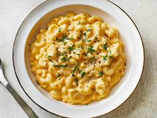

Mac and cheese

This is a Mac and Cheese recipe that is everything you want in a knock-your-socks off Macaroni Cheese,
cheesy and creamy, with perfectly cooked macaroni (no bloated pasta!),
plenty of sauce and a crunchy buttery top (essential in my world!)
This may be a pretty plain dish but its easy to makes,
and it is done within a short time.
Ingredients:
- Cook pasta: Bring a large pot of water to the boil. Add macaroni and cook per packet directions MINUS 1 minute.
- Toss in butter: Drain, return pasta to pot, add butter and toss until melted. Set aside to cool while making the Sauce
- Mix together Topping. Set aside.
- Preheat oven to 180°C/350°F (all oven types).
- Make roux: In a large saucepan or in an ovenproof skillet (I use my 26cm/9" Lodge cast iron skillet), melt butter over medium heat. Add flour and cook, stirring constantly, for 1 minute.
- Add milk: Add about 1 cup of the milk and mix to dissolve the paste into the milk. Then add remaining milk and mix until lump free (use whisk if required).
- Add Seasonings: Mix in salt and Seasonings if using.
- Thicken sauce: Cook, stirring/whisking regularly, for 5 to 8 minutes until thickened to a cream consistency. When the Sauce coats the back of a wooden spoon, you should be able to draw a path with your finger.
- Add cheese: Remove from stove, add cheese and stir. The cheese doesn't need to melt.
- Check salt: Adjust salt to taste (if you use recommended cheeses, you won't need more).
- Assemble: Pour Sauce into pot with Macaroni. Stir quickly, then pour back into the skillet (I did this) or a baking dish (Note 4). Sprinkle with breadcrumb topping.
- Bake for 25 minutes or until top is light golden. Don't bake too long otherwise you'll bake away the Sauce!
- Serve: Serve immediately! I sprinkled mine with a bit of fresh parsley. See notes for best make-ahead method.